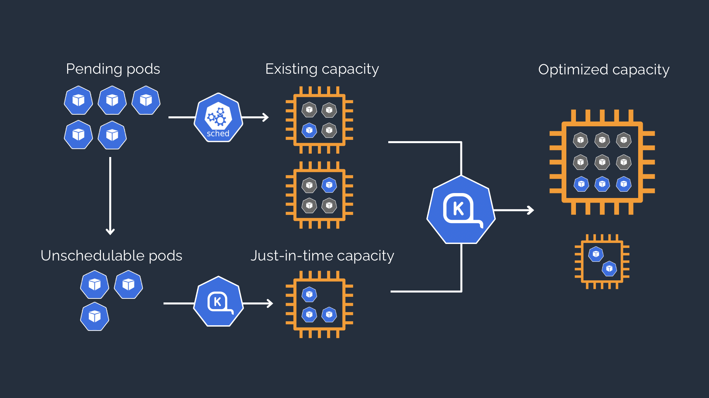

Karpenter simplifies Azure Kubernetes Service (AKS) infrastructure with the right nodes at the right time.
Karpenter automatically launches just the right compute resources to handle your AKS cluster's applications. It is designed to let you take full advantage of Azure with fast and simple compute provisioning for Kubernetes clusters.
Improve application availability
Karpenter responds quickly and automatically to changes in application load, scheduling, and resource requirements, placing new workloads onto a variety of available Azure compute resource capacity.
Lower compute costs
Karpenter lowers cluster compute costs by looking for opportunities to remove under-utilized nodes, replace expensive nodes with cheaper alternatives, and consolidate workloads onto more efficient Azure compute resources.
Minimize operational overhead
Karpenter comes with a set of opinionated defaults in a single, declarative NodePool resource which can easily be customized.
No additional configuration required!
How It Works
Karpenter observes the aggregate resource requests of unscheduled pods and makes decisions to launch and terminate Azure nodes to minimize scheduling latencies and infrastructure cost.
Karpenter is Open Source Software
Karpenter is licensed under the permissive Apache License 2.0. It is designed to work with any Kubernetes cluster running in any environment, including all major cloud providers and on-premises environments.
Have an idea for a feature or found something that could work better? Create a GitHub issue and tell us about it.
Get involved